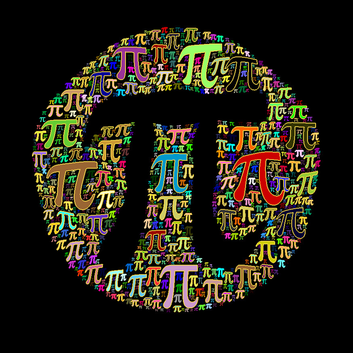

Home
Math
Physics
Programming

Математика не относится к естественным наукам, но широко используется в них как для точной формулировки их содержания, так и для получения новых результатов. Она является фундаментальной наукой, предоставляющей (общие) языковые средства другим наукам, тем самым она выявляет их структурную взаимосвязь и способствует нахождению самых общих законов природы.